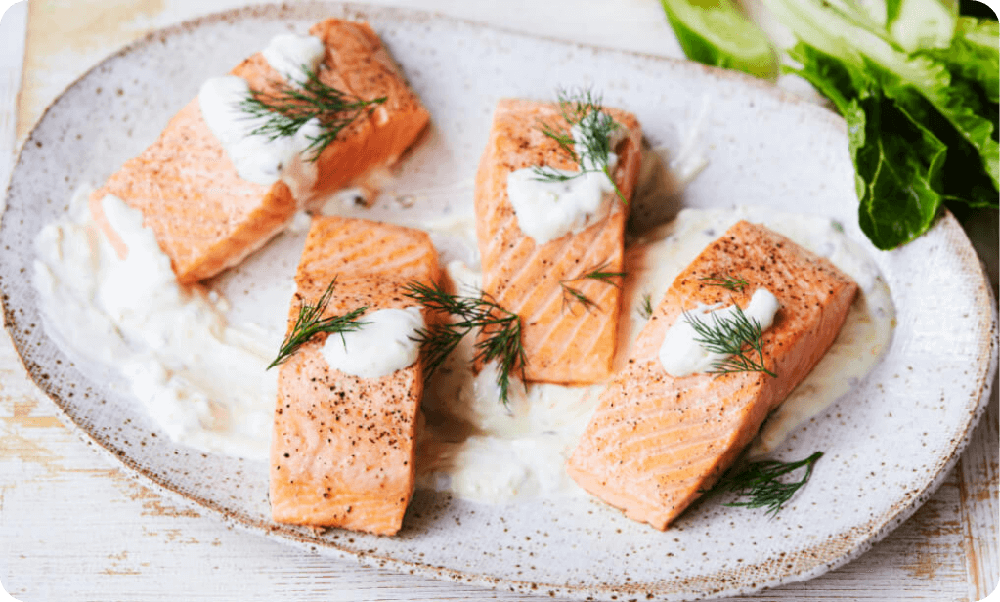

back to the odin recipes
baked-salmon
Salmon Recipe

Ingredients
- 4 salmon fillets
- 2 tablespoons olive oil
- 2 tablespoons Dijon mustard
- 2 tablespoons honey
- 1 tablespoon soy sauce
- 1 teaspoon garlic powder
- Salt and pepper, to taste
- Lemon wedges, for serving
Instructions
- Preheat the oven to 400°F (200°C).
- Line a baking sheet with parchment paper or foil.
-
In a small bowl, whisk together the olive oil, Dijon mustard, honey, soy
sauce, garlic powder, salt, and pepper.
-
Place the salmon fillets on the prepared baking sheet and brush the
mixture over the top of the fillets.
-
Bake the salmon for 12-15 minutes, until cooked through and flaky.
- Serve the salmon hot with the lemon wedges. Enjoy!